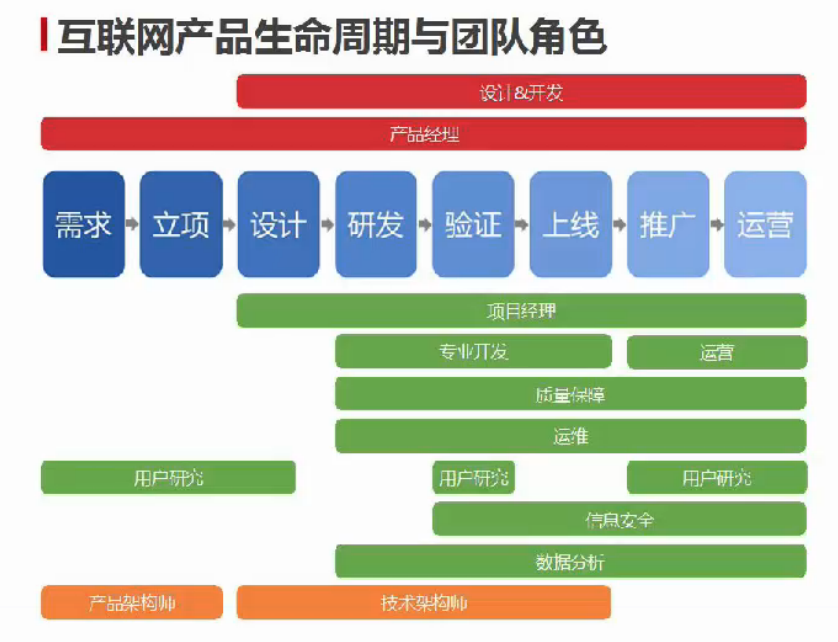

产品经理之道
1.产品经理：能够独当一面做好让用户满意的产品的人
2.产品经理核心工作
- 决定什么是“正确的事”
- 推动做好“正确的事”
3.产品经理的道
- 同理心——换位思考（用户角度）
- 清晰深刻的思维——极简主义，简化问题
- 大视野——谋全局，谋万世
- 努力组建没有短板的优秀团队
4.做聪明人，花笨功夫
- 不搏二兔
- All in
- 一万小时
5.产品经理的工作步骤
- 1）组建一支没有短板的优秀团队
- 2）确立风口下的战略方向和产品蓝图
- 3）确定产品发展路线图
- 4）执行（All in and Enjoy）
6.直播课
- 1）产品生命周期

- 2）技能

需求挖掘与分析
一、洞察用户心理
1.在总结中挖掘用户心理
2.从数据中获取：
- 1）关键词提取
- 2）感悟用户心理
3.为什么洞察需求很重要
- 1）满足用户深层次的需求
- 2）产品很好的粘性
- 3）与品牌有关
4.用户心理
- 1）爱现
- 2）共鸣
- 3）争斗
- 4）社群
二、需求挖掘与分析
1.不断问自己问题，注意观察生活
2.老板需求：搞清需求背后的动机
3.需求分析：角色、场景、路径
4.穷举抓重点
三、用户研究方法

市场与竞品分析
一、竞品分析
1.用户分析：
- 核心用户：了解产品功能，用户调研，用户画像
- 主流用户：画像
- 竞品核心用户构成比例：对竞品整体的清晰认识，画像+数据分析
2.功能分析
- 分析内容：核心功能、使用数据、发展趋势
- 核心功能分析方法：站在竞品PM角度、排列功能优先级、确定核心功能
- 面对核心竞争力：超越、避开
3.数据分析
分析内容：整体数据、变化趋势、具体功能数据
方法：搜索行业报告、用工具查看流量排名、基于经验的判断
功能数据：体力活，手动去统计
二、寻找市场切入点
1.市场分析
- 1）SWOT法
- 2）为各个功能点打分
2.相关市场分析
- 1）有没有平台支撑
- 2）是否高频
- 3）垂直领域
- 4）关注上下游和相关的市场
- 5）形成产品体验闭环
- 6）用户的需求是随时在变的
3.寻找产品定位
- 1）产品切入点一定要有细分
- 2）新兴：足够前瞻，未来改变现在
- 3）注意连接普通用户，让大众能消费
精益产品设计
一、设计流程
1.四纵四横

2.产品发布流程

3.精益产品设计流程
- 1）构想：提出假设=>验证假设=>产品设计

- 2）打造：打造MVP
- 3）测试：Product/Market Fit（符合市场需求产品）、EVP（卓越的可用产品），控制MVP的结构

- 4）迭代：从1）开始再来
二、设计准备
1.需求还是解决方案？
- 1）多问几个为什么？5y法
2.用户角色与使用场景
- 1）人物画像

- 2）人物角色不是用户细分
- 3）用户角色不是真实用户
- 4）关注使用场景
三、设计方法
1.规则设计与功能设计
- 1）背景材料

- 2）完整产品

- 3）规则设计：相当于游戏里的玩法，需要定义清楚产品是什么，它是如何动作的，需要设计你希望用户如何去使用这个功能产品，他们可以做什么，他们应该做什么
- 产品原则：产品团队达成的共识；不局限于某一范畴；
- 4）功能设计：将规则设计中所描述的产品规则，遵循规定的产品原则细化完善成具体的产品功能，需要考虑：
- 用户需求
- 用户任务：用户为达到目标使用产品时需要做的任务
- 使用场景：用户在什么情况下做了什么
- 技术限制
- 相关竞品
2.流程设计与架构设计
- 1）流程设计
- 产品流程是描述你的产品或功能是如何具体的运行的

- 体现产品特点
- 流程图


- 2）架构设计：将产品的功能入口和内容有序的组织在一起，让用户更容易的找到自己想要的东西和产品，可以通过入口安排、内容组织传达、突出某些信息给用户
- 内容组织是将产品的功能和内容有序的组织在一起，自下而上或自上而下
- 内容组织要点：用户的理解、功能或内容的使用频次、产品的核心价值、产品的目标
- 框架设计：导航设计，以什么形式将分类好的内容展现给用户
3.原型设计
- 1）注意：
- 不用纠结于原型的绘制工具
- 不用产出高保真原型
- 不用去学习复杂的交互动作
- 不要过度设计
- 2）步骤
- 选择需要设计的功能模块
- 画出该模块的功能流程图
- 将每个流程中的功能点列出来
- 依据流程将次序相同、功能接近的功能分类组织在一起，得到了内容组织图
- 通过内容组织图，得出该模块需要哪几个具体的页面
- 为每个页面的功能排列优先级
- 设计每个页面的具体原型


精益数据分析
一、认识数据-产品经理与数据分析
1.不可轻信数据表面，要看数据背后隐藏的信息
2.数据中的因果

3.不轻信数据、不依赖数据、不妄论大数据
二、获取数据-产品分析指标和工具
1.网站数据指标
- 1）指标分析工具：Alexa、Google Analytics、百度统计、CNZZ
- 2）关键指标

- 3）对分析网站宏观分析

2.移动应用分析
- 1）主要指标


- 2）版本迭代效果用新用户来衡量
- 3）移动应用分析工具

3.电商类数据指标
- 1）销售额的变动因素

- 2）客单价增长因素

4.互联网产品指标思路


5.转化漏斗

三、数据分析-产品数据分析框架
1.基本分析方法
- 1）对比分析：横向（自己）、纵向（其他人）
- 2）象限分析：四象限
- 3）交叉分析（多维度）：对数据在不同维度进行交叉展现，进行多角度的结合分析
2.基本框架—AARRR


3.逻辑拆解与漏斗分析
- 1）逻辑分层框架


- 2）漏斗分析

4.数据会说谎
四、利用数据-数据驱动产品
1.数据应用场景
- 1）来自高层需求：从数据入手，验证观点，提供建议
- 2）设计前，通过数据分析发现问题
- 3）设计中，辅助决策，判断思路
- 4）设计后，数据验证方案
- 5）数据驱动产品闭环

2.数据驱动产品方法
3.数据分析技能的培养
- 1）心法层面：好奇心、求知欲
- 2）对业务足够了解
- 3）重视数据，保持敏感：关注数据、活用数据
冷启动与高增长
一、产品经理的正确运营观
1.运营核心目标

2.不同阶段产品运营的配合

3.产品与运营工作方式的差异

4.用户体验要素

5.运营核心要素

6.运营要素分析表

二、从0到1，通过运营实现产品验证
1.冷启动阶段目标
- 符合市场趋势
- 满足用户需求
- 商业模式是否成立
2.没有产品，一样可以做运营！
3.没有产品，一样可以推广留存用户！
4.产品原则：用户反馈+自动更新升级=MVP最重要功能
5.天使用户与种子用户
6.保护种子用户口碑

7.把初创产品当成成熟产品来运营
8.种子用户最重要运营目标
- 获得用户真实使用数据
- 获得用户直接的场景反馈
9.可以被动，更要主动回访
10.MVP假设

三、新媒体运营
1.新媒体运营的目的
- 知名度
- 影响力
- 拉新
- 销售、客服
2.目标/KPI
- 粉丝数
- 转发数/阅读数
- 引入流量/来源注册数
- 销售额
- 解决客服问题/复购率
3.理智的评价新媒体的效果
- 不要盲目的崇拜阅读量/转发数
- 别对新媒体运营有非分之想
- 不是所有产品都应该大力投入新媒体运营
4.新媒体渠道
- 明确产品的定位和阶段大目标
- 确定新媒体的定位：人格化定位、提供哪些内容和服务、建立统一运营规范
5.策划新媒体的内容
- 日常发布的内容、频次
- 建立特色栏目，固定时间发布
- 策划互动活动
6.策划新媒体的服务
- 利用平台技术，寻找自己的特色服务
- 口碑运营重镇：建立口碑管理的白皮书
7.传播与引爆的方法论
- 提早计划，建立运营日历：历史日期、假期、冷门科普节日
- 产品目标用户可能关心的重要纪念日
- 关注时事、网络热点、随时准备：关注<>盲目紧跟，选择符合自身定位的选题或角度
- 除了跟风，还可以制造风：策划社会热点
- 一个标题，胜过千言万语
- 不要一个人战斗，铺设传播资源
- 抓住新平台的红利
- 紧跟样的媒体平台的规则
8.H5典型案例及类型

四、流量的秘密
1.常见渠道
- 线下渠道
- 线上渠道：应用市场、信息流广告、广告平台网盟
2.渠道合作方式
- 商务层面合作
- 运营层面合作
- 产品层面合作
3.渠道：让产品到达用户的通道，是一条线路，能够接触到用户的，都是渠道
4.渠道防作弊
- 快速试错
- 不断更新
- 用户获取价格不会过低
5.常见的渠道需求
- 接口型需求：内容的输出、引入；开放平台的接口；
- 产品功能型需求：红包、PUSH等
- 数据型需求：数据采集、统计布点等
五、手把手教你如何让产品长大
1.成长期产品策略
- 围绕核心功能快速迭代
- 打造产品口碑
- 专注发展目标用户
2.聚集目标用户
- 不开发核心功能外其他功能
- 获得目标用户群体的口碑，自发产生传播
3.成熟期产品策略
- 重视节流
- 提升运营效率
- 发掘新功能提升产品价值
4.如何延伸产品线
- 增加产品护城河
- 同样人群的不同需求
- 产业链上线游
5.产品运营目标

6.团队在生命周期管理的配合

7.激活用户的弹药库